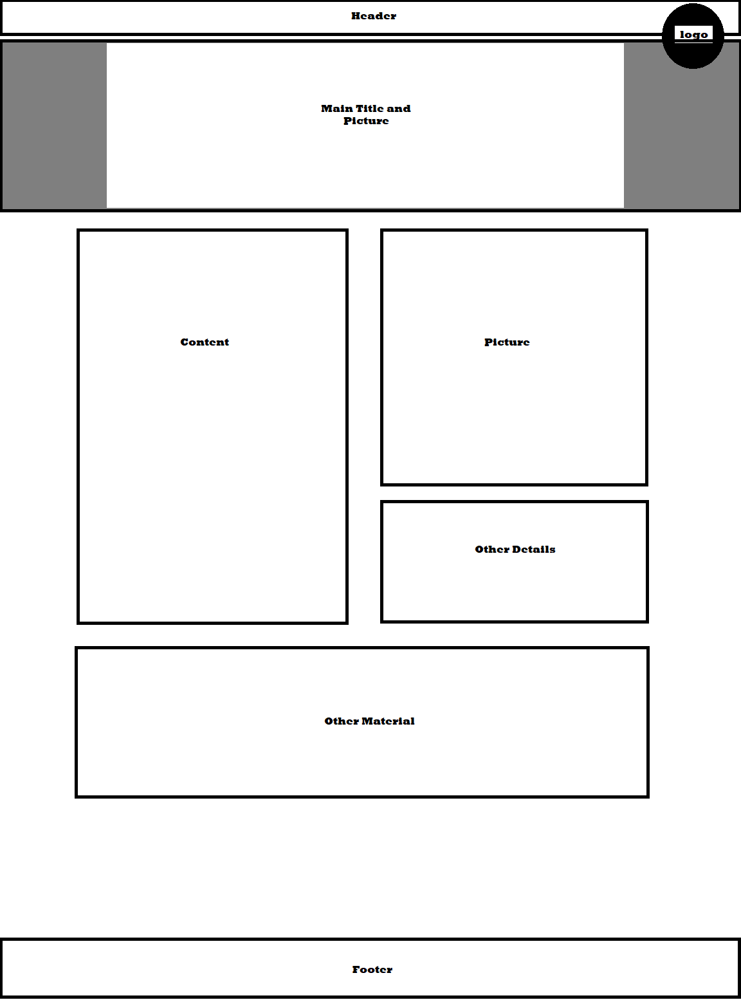

The purpose and audience
The audience of this Website are people who are looking to have custom
projects made. The Idea is that this site will mimic what a website for a
small business that creates custom wood projects. Many People go to places
like etsy for these sorts of things but these sites are flooded with cheap
or poorly build products.
Logo

Color scheme.
Color Palette
#CA965C
#EEC373
#876445
#F4DFBA
Fonts
Caveat
Playfair Display
Lora
Open Sans
W08 - Personal Site Content
Why will people come to your site?
People will come to this site to find small businesses that create custom
products for their homes and offices. Right now most people have a very
hard time finding people who are capable of making their dream product and
so they give up and go to big showroom stores or home depot. Small
business owners may also be struggling to find customers and come to us to
advertise their company and hopefully make them some more money.
What questions will your visitors expect your site to answer for them?
People will come to this site to find small businesses that create custom
products for their homes and offices. Right now most people have a very
hard time finding people who are capable of making their dream product and
so they give up and go to big showroom stores or home depot. Small
business owners may also be struggling to find customers and come to us to
advertise their company and hopefully make them some more money.
What types of activities will visitors want to complete on your site?
They will want to find people who are capable of building their project
and visual representations of what the masters can build. They will need
to get in contact with said masters in order to see if their vision is
feasible and they are able to do it. They will then take transactions off
of the website and commission the project with the small business
directly. People may also want to get in contact with a master of the
craft to gather more information. Even if they do not make a purchase or
make contact with a craftsman they may be able to find inspiration or help
for their own project.
What information is necessary to complete any actions your site offers?
The website will need to know their name and contact information so that
when they contact contractors or master craftsmen they will be able to be
contacted again at a later date. We will also need to find a way to get in
contact with many small businesses in order to put them on our website and
get them advertised to people. The website will also need to know the
qualifications of the master craftsman and examples of his work to show
customers. The website will also collect the names of the various
businesses.
Why will your visitors come to your site instead of another to get this
information or complete the actions?
Because most small businesses do not have a standalone website and they
are just spread out by word of mouth or social media. This will contact
small businesses directly with customers who need more information or want
to see their vision made a reality. Many companies that boast selling with
small businesses such as Etsy aren’ t very useful when it comes to
commissioning projects. You can find small projects on there but it is
nearly impossible to customize them. This will also get them in contact
with custom cabinet makers, places like lowes let you customize your
cabinets but it is from a selection of cabinets you aren’t able to truly
customize the look and put your own touch on it.
Pictures


Wireframe For The subpages

...